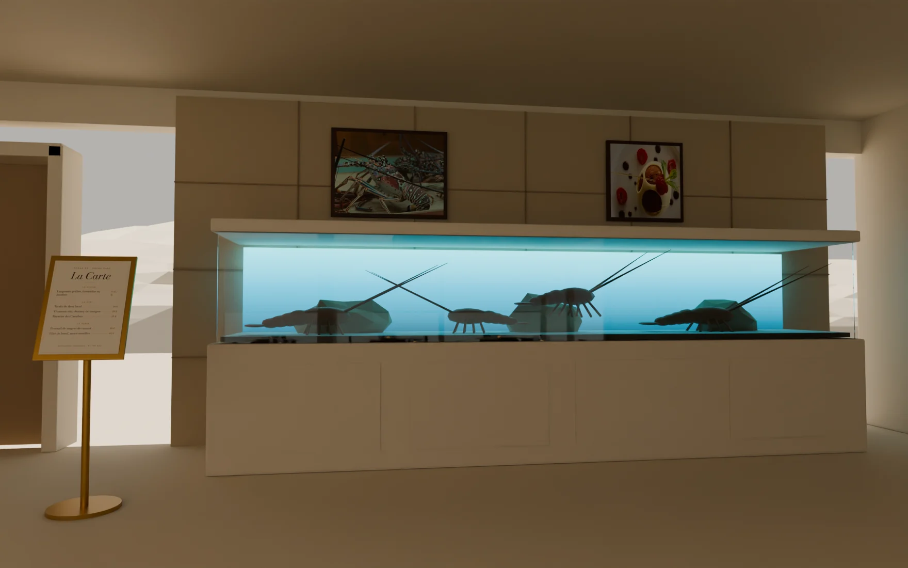

01 La carte 2027
Cuisine française, saveurs de la mer.
Le vivier
- Langouste grillée, thermidor ou flambée41 € / livre
La mer
- Tataki de thon local, salsa de mangue36 €
- Vivaneau rôti, chutney de mangue39 €
La terre
- Éventail de magret de canard38 €
- Filet de bœuf à la plancha, sauce morilles45 €

02 Le vivier
La langouste, choisie devant vous.
Langouste du vivier, préparée selon votre choix : grillée, thermidor ou flambée.
41 €la livre90 €le kilo